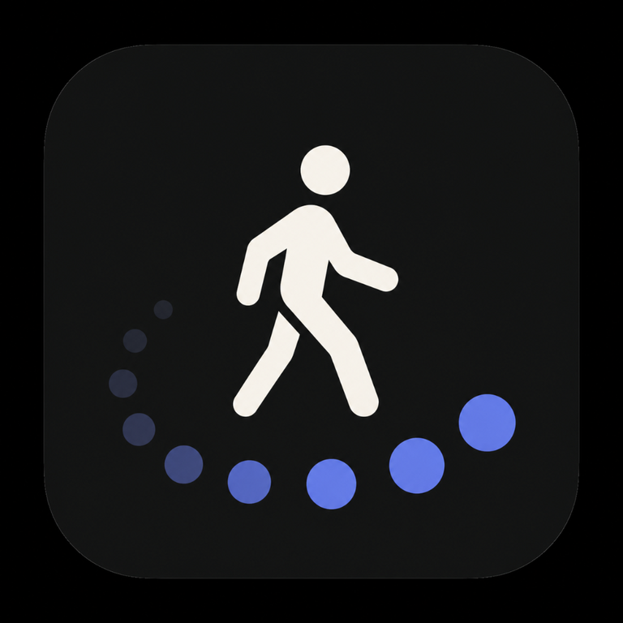

Questions, bug reports, feature requests, or confusion about tracking behavior in Just Walk. This page gives users a direct place to get help.

Simple walking tracker with live stats, streaks, and a clean days-you-walked view.
iPhone · DahVio StudiosNo. The app is designed to work without sign-in, registration, or a cloud profile.
Location access is used during an active walk to estimate distance traveled. The app stores total distance for the session, not a route map.
Step count depends on your device's motion and pedometer support. Distance depends on location services and permission being available while the walk is active.
Yes. Just Walk stores walk history and preferences locally on-device, so the core experience does not depend on an account or constant internet connection.
Yes. The app can generate a share image for the days-you-walked mosaic so you can export that visual using the standard iPhone share sheet.
Walk history is stored on your device, so deleting the app removes it from the device. If iCloud backup is on (Settings → Back up to iCloud), a copy also stays in your own iCloud account until you delete it there.
Email ray@dahvio.com with what happened, what device you are using, and what you expected to see. That makes it much easier to debug quickly.
Need help, want to report a bug, or have a suggestion for making Just Walk simpler or better? Email is the best way to reach DahVio Studios.
ray@dahvio.com